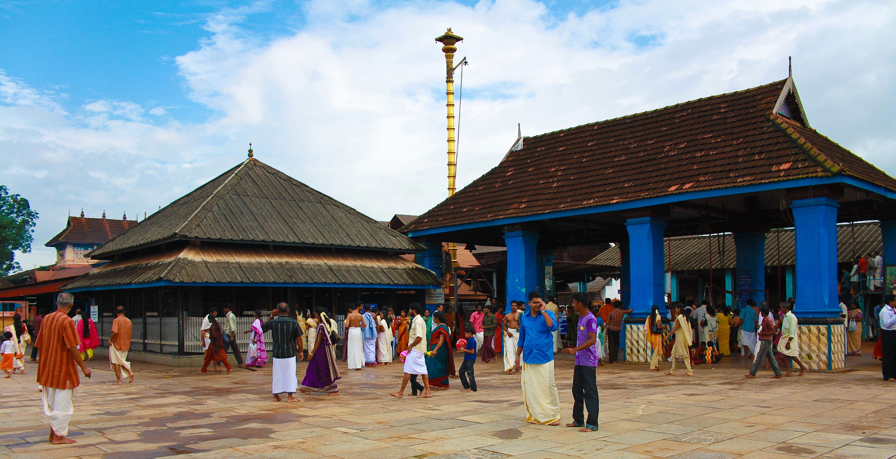
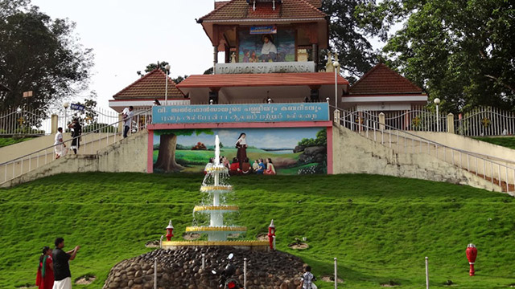

Kottayam
Kottayam is a city in the Indian state of Kerala. It is located in central Kerala and is also the administrative capital of Kottayam district. Bordered by the lofty and mighty Western Ghats on the east and the Vembanad Lake and paddy fields of Kuttanad on the west, Kottayam is a land of unique characteristics. Panoramic backwater stretches, lush paddy fields, highlands, hills and hillocks, extensive rubber plantations, places associated with many legends and a totally literate people have given Kottayam District the enviable title: The land of letters, legends, latex and lakes. The city is an important trading center of spices and commercial crops, especially rubber. Most of India’s natural rubber originates from the acres of well-kept plantations of Kottayam, also home to the Rubber Board. Kottayam is also called as “Akshara Nagari” which means the “city of letters” considering its contribution to print media and literature.
Top Destinations

Kumarakom Bird Sanctuary
The Kumarakom Bird Sanctuary, also popularly known as the Vembanad Bird Sanctuary, is a breathtaking and beautiful bird sanctuary that is located at Kumarakom in the Kottayam district in the Indian state of Kerala. Situated on the banks of the Vembanad Lake in the Kerala Backwaters, this bird sanctuary is a favourite destination for many native as well as migratory birds, which makes the place a dreamland full of ecstasy and delight for bird watchers and nature lovers. The houseboats and motorboats that are available on rent to watch birds further enhance this enrichening experience. A trip to the Kumarakom Bird Sanctuary is thus a must while in Kerala, to explore and unravel the hidden treasures and gifts of the Earth.
Chottanikkara Temple
Located around 50 kms from the town of Kottayam near Ernakulam, Chottanikkara is the most revered of the 393 Hindu shrines spread across 3 districts in the state of Kerala. Popular for its spectacular architecture, the shrine stands out to be the ultimate testimonial for the primordial vishwakarma sthapathis (wooden sculpture) in carving out this temple. Sree Mahamaya Bhagawati (Aadiparashakthi), believed to be the supreme mother Goddess in Hindu religion, also known as the Goddess of Power presides the temple. Popularly known as Chottanikkara Devi, the Goddess is worshipped in three forms at three different times of the day. In the morning, she is worshipped as Maha Saraswati (Mother of Knowledge), decked in white; in the afternoon, she is worshipped as Maha Lakshmi (Mother of Wealth), clad in crimson; and in the evening, she is worshipped as Sree Durga (Mother of Power), draped in blue. Besides the Chottanikkara Devi, Supreme God Shiva, Ganesha and Lord Dharmasastha (Ayyappa) are also worshipped at the temple.
Tomb Of Saint Alphonsa
This tomb holds the mortal remains of an Indian religious educator, St. Alphonsa (1910-1946), who was born as Anna Muttathupadathu. She is said to be the first Indian woman to be canonized by the Catholic Church as a saint. Every year on 28th July, the church is teeming with devotees who pay homage to the sister on the death anniversary. You will also find a museum adjacent to the chapel which displays her belongings including an umbrella, cot, and books. If you are the religious kind of person then you must visit this chapel as it is one of the most revered places to visit in Kottayam.